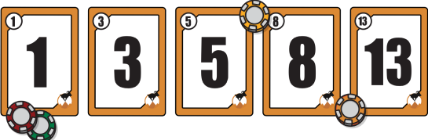

O planning poker por mais que não seja um dos principais artefatos do scrum, é uma das ferramentas mais importantes para designação de tempo para cada tarefa, sendo isso feito através da avaliação da dificuldade de cada tarefa e a expectativa de tempo gasto para tal.
A ferramenta possibilita pontuar e classicar as tarefas com um sistema de números utilizando o conceito de escala Fibonacci por meio de um baralho. A estimativa é realizada de forma consensual entre os membros do time de desenvolvimento (desde Júnior até sênior).
Como a sequencia numérica acima, sendo o menor número como o mais facil e rapido de ser realizado e o ultimo sendo o mesmo mais demorado e/ou dificio de ser realizado.